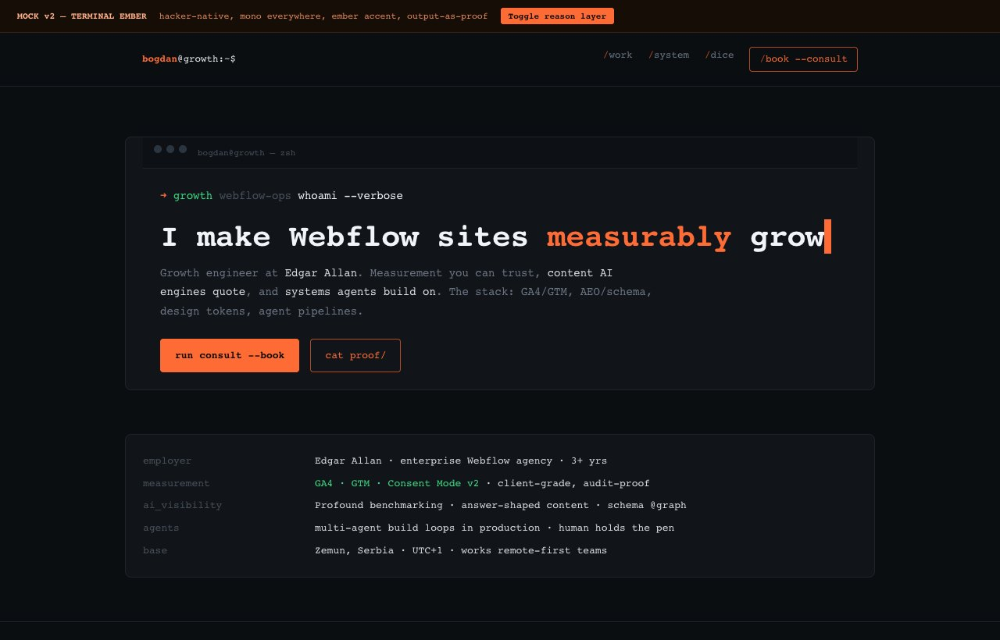
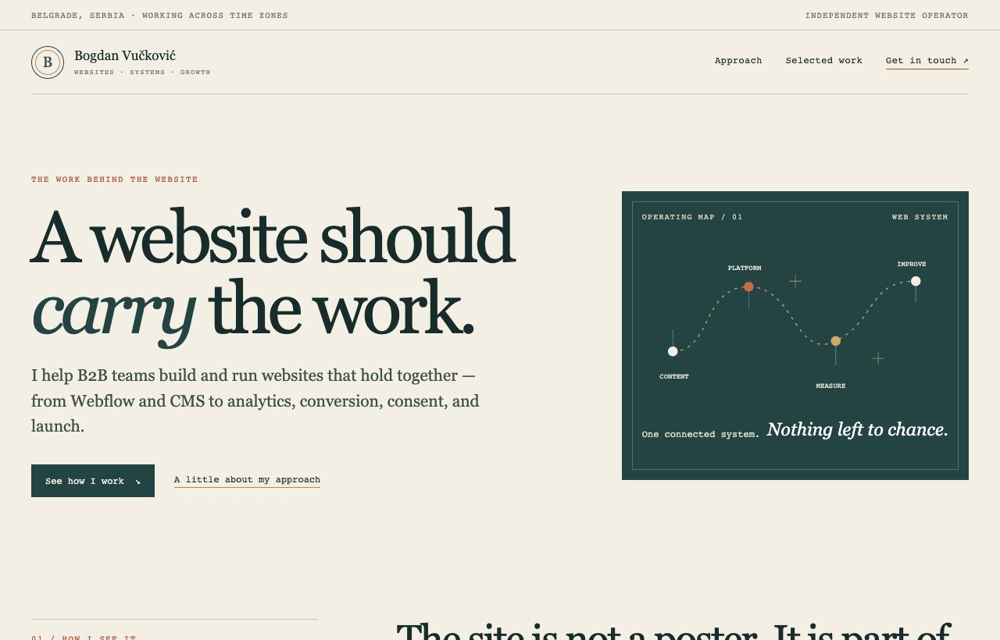
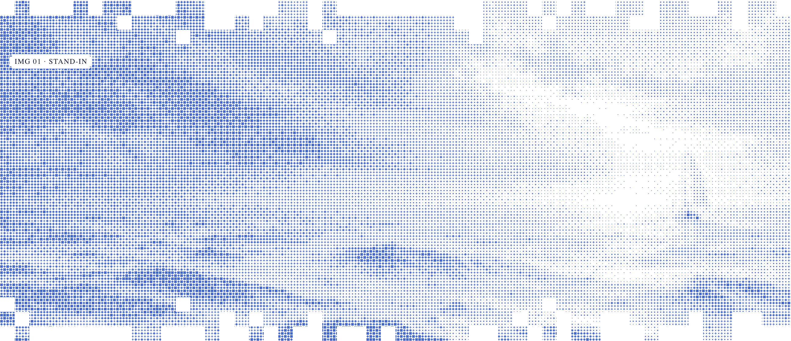

Chance opens.
The bearing is yours.
I was looking for a creative process. Could an AI follow one and make something I hadn’t already described?
I started testing. Here are some of the things that came out of it.
Follow the works below. Stop for a closer look, or find your own route on the map ↗.
What if the process
was a tarot reading?
The conversation started with a few creative processes to try. Gradually, we arrived at tarot.
A reading already has a structure. You bring a question, shuffle the cards and interpret what comes up. Five words could be my way of taking part in the shuffle.
While you’re shuffling, you’re thinking about the question you’re asking and the answer you need to hear. I wanted to keep that part of the ritual.
For me, randomness is a way of opening a door to the cosmos, so the reading can bring back the answer I need to hear.
Where the process started
I asked Gemini what creative processes an AI could use. It suggested five approaches before the tarot idea emerged in the conversation.
- Oblique Strategies. Introduce a constraint that rules out the obvious answer.
- Multi-perspective critique. Let a pragmatist, an artist and a critic challenge the same draft.
- Re-classification. Borrow a structure from another field and apply it to the task.
- Recursive loops. Generate ideas, question their assumptions and try again.
- Semantic deconstruction. Turn a vague instruction into effects you can describe.
Gemini suggested five words as one way to take part in the shuffle. I kept that idea, but their literal meanings weren’t supposed to shape the answer.
Read the transcript excerpts →on an image.
The wolf showed us
what had to change.
blessing · Wolf · roof · katarina · vera

I gave it five words.
It drew three of them.
I wanted a striking image I hadn’t seen before. I gave it five words to shuffle the cards.
It put a wolf on a roof with Katarina. Three of the words had become the picture.
That made the problem easy to point at. The words were supposed to mix the cards. Their meanings were getting into the answer.

Same brief.
Same five words.
A different way of using them.
We changed the system so the words shuffled the cards, and the reading worked with the cards and the question.
This time, the answer was white stone, a fracture and liquid metal. We were finally getting somewhere I hadn’t described.
That was the part I wanted to keep working on.
A closer look at the experiment
“No try the same prompt
but with new system”
The first retry added streams of light between the woman and the wolf. It still used the words in the same way. Keeping the brief and the five words gave us a way to see what changing the system actually did.
The wolf image came from the original Gemini exchange. The stone image shown here is a later illustration made from the prompt preserved in that exchange.
Later tests caught the old habit returning. One word in a game brief was “sand”; the answer became a game about driving across unstable sand. I kept testing and asked for instructions I could take to another model.
Read the transcript excerpts →Explore the later field tests →I still had to choose what to do with it.
A coin with
two different jobs.
Seed · the starting point chance gives you
The five stars connect to Cassiopeia, a constellation that helps you find north.
The Reckoning Coin / 11 October 2026The process could give me a starting point. I still had to decide what to do with it.
When I was working on my website’s identity, I wanted a coin that held both parts: a constellation on one side, a compass on the other.
Chance opens.
The bearing is yours.
Notes from the coin brief
I brought D.I.C.E. into the brief for the website’s identity. I already had the line “Chance opens. The bearing is yours.”
Claude suggested the name Reckoning Coin. When I saw the five stars, I asked whether we could connect them to Cassiopeia. The compass points at 022.5°, north-northeast: a chosen heading.
Read how the coin was designed ↗why the work belongs together.
I didn’t like
any of the first three.



“I hate all three directions.”
I wanted more breathing room and a serif with some character. I also wanted someone to see how the work connected, and why I had made the decisions I made.
Seeing the first versions gave me something specific to change.

A website should
carry the work.
That gave us a useful starting point. The layout, typography and images had to help someone follow the work.
See the next versionLater came a small boat in a big, frightening sea. Having a goal was what made the scene work for me.


The same boat,
drawn differently.
Petar reworked the boat in dots and crosses, drawing on the graphics in Hermes Agent. The same marks became the sky above the headline. You could still find the little boat and the big sea.

been told about it?
The website said one thing.
The answer said another.
I wanted my website to show how the work connected, and why I had made those decisions. An AI answer could reach someone before they ever saw the page.
I’d been working on that question since 2023. In one of my notes, I recorded an answer that picked up outdated pricing hidden in a website and described some of its features incorrectly.
What would someone understand about the business if that answer was all they read?
I needed to look at what the system found, what it used, and what it told the person asking.
Pick a year to see how the question developed.
An answer that did not match its source.
An early note records an AI getting a website wrong. The archive preserves the note. The original exchange hasn’t been reproduced in this study.
Open the illustrated research ↗what are they still trying to work out?
People arrive
with different questions.
Say you run a maintenance team. You keep sending technicians back to jobs you thought were finished. What did they need on the first trip that they didn’t have?
Someone else looking at the same software may already know the answer. They want to know whether dispatch can send the equipment history to the technician before they leave.
I sketched three ways into the same site. Try the industry page, the problem page or the solution page and see what each one offers you.
Field service software for HVAC contractors
Reads the HVAC page, then opens the multi-site maintenance example.
A multi-site maintenance checklist
Planning maintenance across several sites? Use six questions to check what your current process can handle.
Open the checklist
- List the sites, equipment and maintenance intervals you need to cover.
- Identify who owns each schedule and who can change it.
- Check how urgent jobs are prioritised alongside planned work.
- Confirm what a technician can access without a connection.
- Decide which proof of completion the customer needs.
- Name one measure for a pilot: missed visits, repeat visits or scheduling time.
Multi-site maintenance may be relevant. Industry fit alone does not reveal a purchase plan.
Northline’s second visit
For the account-based marketing (ABM) study, I followed a fictional company called Northline Maintenance through two visits. The first time, someone reads about repeat callouts. I’d offer them a worksheet to look at ten jobs that needed a second trip and see what was missing.
When they come back, they’re looking at shared job records. Now I’d offer a pilot plan they could try with one team. If dispatch and the technicians have the same equipment history, how often does someone still have to go back?
Would anyone actually buy the help?
I also looked at whether market changes could point towards website work. We compared 30 selected healthtech companies with 30 cybersecurity companies. There were signs of website work.
A price movement gave me a place to look. It didn’t tell me who would buy. That’s why the next step was checking the companies, their tools and their budgets.
Follow the demand research ↗Explore the ABM study ↗someone make a decision?
That’s one route.
There’s more to look at.
There are more attempts, drawings and questions on the map. Open something that catches your attention. The originals and the next versions are there to follow.
Open the full Atlas